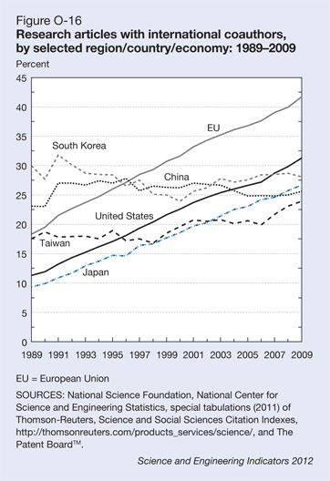
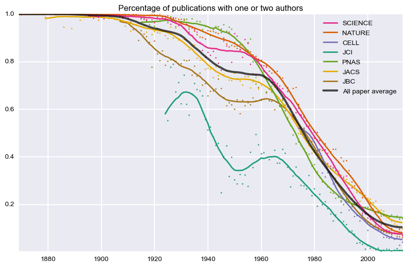

Rise of
the Coauthor
Travis Hoppe, Dan Appella
Motivation:
Author count histogram for a single issue of JBC

Is science really changing?
YES!
NIH budgets, PDB submissions, number of postdoctoral/doctoral students, number of international collaborations, ...
NIH Funding
Growth of Data
Submissions to PDB

Growth of Temporaries
International groups

Editorial
Purpose of this talk is to examine the trends of
journal article authorship
and any other interesting facts from the front-end of a journal.
Methods
Journal studied: Science, Nature, Cell, JCI, PNAS, JACS, JBC.
For every journal, every table of contents was downloaded.
This gives titles and authorship information for every paper.
Filtered for editorials, corrections, errata, book reviews, ...
Limitations
Why not examine the abstracts, or the articles themselves?
- Legal issues (c.f. Aaron Swartz)
- Time/complexity issues
- Publicly available data
Consortia
LARGE project collaborations
Removed from study
Examples:
Genome (link)
Mars Rover (link)
Etc (link)
Extrapolate?
Correlated to growth?
Single Authorship

Lexicographical analysis
Look for significant keywords in the titles
- Remove stop words:
e.g. [the,first,has]
- Apply stemming, lemmatization:
(acids, acidic) acid
Identify a canonical representative set for related words
NATURE 1935
spectrum 4.24
structure 3.15
neutron 3.01
radioactivity 2.74NATURE 1951
acid 7.32
chromatography 2.76
structure 2.68
cell 2.20NATURE 2013
cell 12.59
structure 5.87
protein 5.13
human 5.01
Title length
Longest title:
Shortest title:
Verbosity Saturates
Reasons?
- More money == More science?
- New science requires international collaborations, e.g. all the low hanging fruit is gone
- White bull effect?
- Diluted second authors?
Is this a bad thing? What is lost?